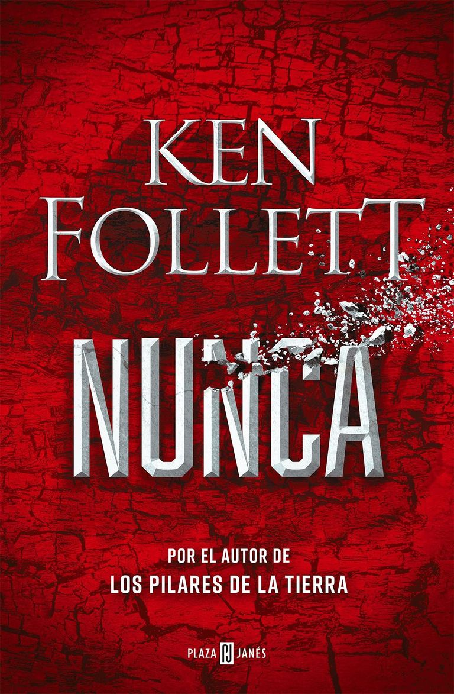
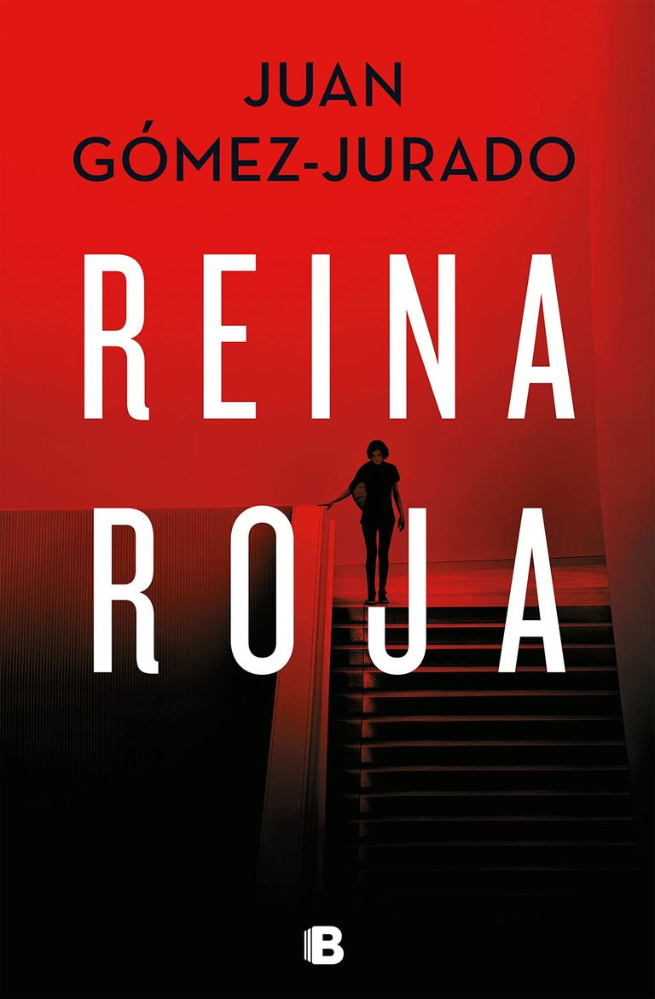

|
Esperando al diluvio La autora de la popular trilogía del Baztán ha regresado con una nueva obra protagonizada por Noah Scott, un investigador de policía escocés que sigue las pistas de un asesino acusado de matar a tres mujeres en Glasgow y al que la prensa bautizó como John Biblia. Justo cuando está a punto de hacerse con este misterioso criminal que lleva años en busca y captura, un ataque al corazón frena los planes de Scott. Sin embargo, sus ganas de resolver el crimen pesan más que las negativas de su médico y de sus superiores, lo que llevará al investigador hasta la ciudad de Bilbao, antes de que un gran diluvio destroce la ciudad. Precio: 19.90€ |
|
|
El caso de Alaska Sanders Diez años después de la publicación de La verdad sobre el caso Harry Queber, que contó con más de 15 millones de lectores, llega la segunda parte de esta historia. En ella aparecen personajes como el escritor Marcus Goldman y el sargento Perry Gahalowood, con el objetivo de encontrar pistas que resuelvan el asesinato de Alaska Sanders, cuyo cadáver apareció en New Hampshire. Tras 11 años sin verse, ambos comienzan a trabajar de nuevo juntos, esta vez con la ayuda de una nueva joven agente de policía, Lauren Donovan, que tratará por todos los medios de resolver los misterios que envuelven este caso. Precio: 15.75€ |
|
|  |
Nunca Un mundo que, en la novela, parece acercarse casi inevitablemente hacia un conflicto global que podría acabar con la civilización que se le ocurrió al autor al investigar sobre la Primera Guerra Mundial y descubrir que fue un conflicto que realmente nadie quería. Precio: 23.65€ |
|  |
Reina roja En esta nueva obra, nos presenta a Antonia Scott una especie de señorita Marple que ha resuelto multitud de crímenes, pero que hace mucho que no sale de su ático de lavapiés. No obstante, eso está a punto de cambiar ya que Antonia va a recibir una visita que lo cambiará todo. Precio: 19.85€ |
|
A fuego lento Un hombre joven muere en una casa flotante de Londres, tres mujeres son sospechosas del crimen. Las tres tienen motivos para haber cometido el crimen y a lo largo del relato la trama se irá revelando hasta llegar al sorprendente final. Precio: 19.85€ |
© La Rana Hyliana.